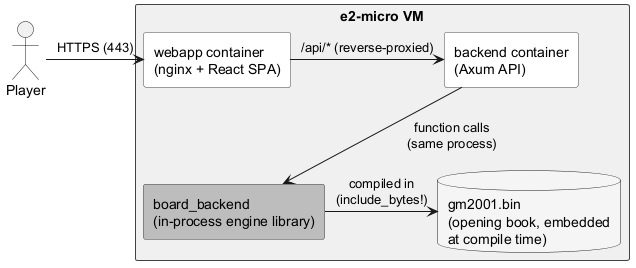
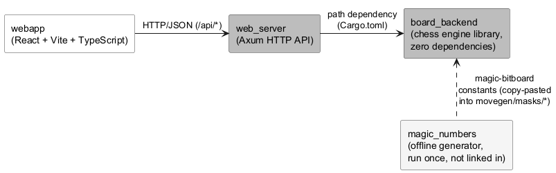
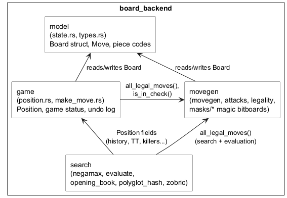
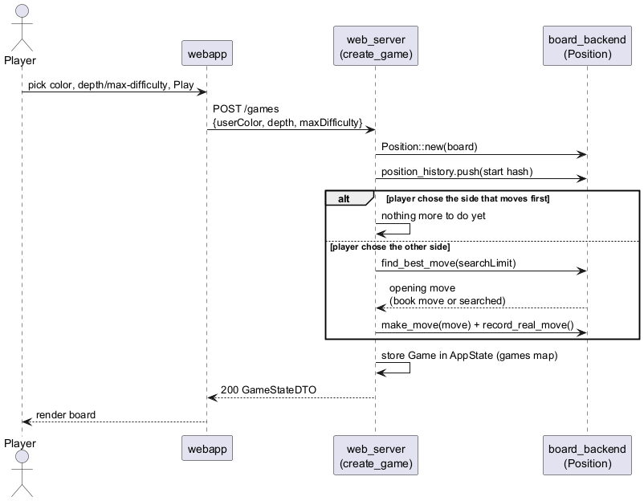
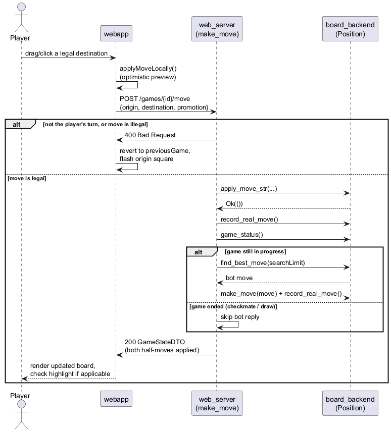
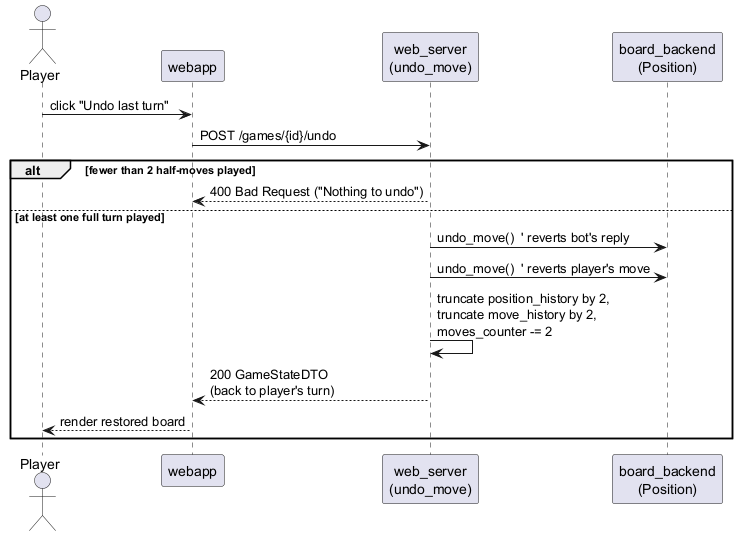
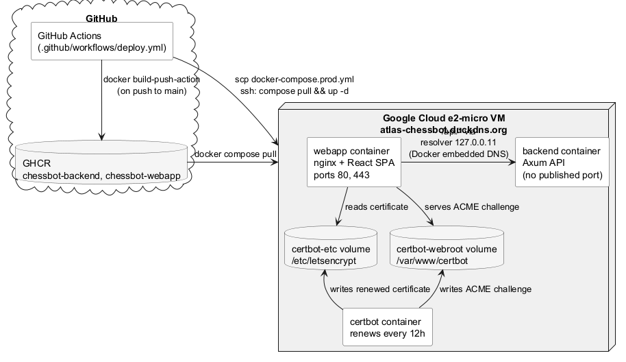
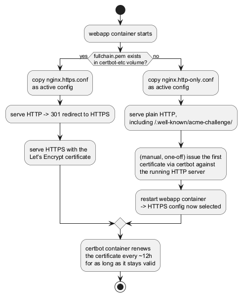
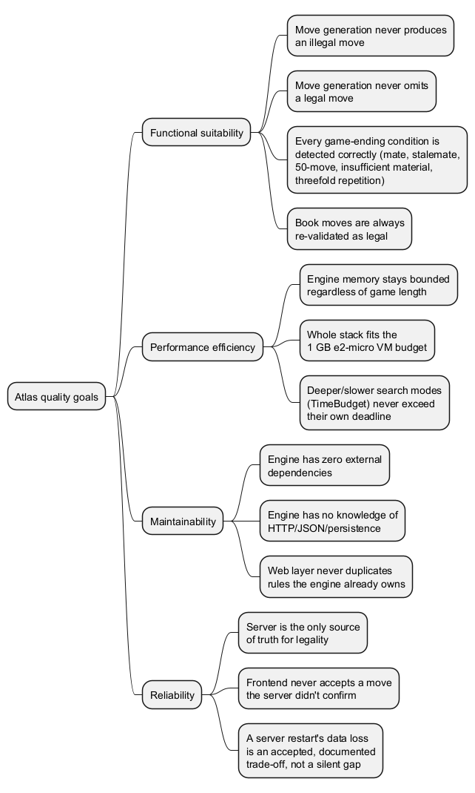

1. Introduction and Goals
Atlas is a chess engine written from scratch in Rust, exposed through a web API and played
through a browser-based board. The project has two parts that are deliberately kept
independent: board_backend, a dependency-free chess engine (board representation, move
generation, search, evaluation, and an embedded opening book), and a thin web stack
(web_server, an Axum HTTP API, and webapp, a React/Vite single-page frontend) that lets
a human play against it.
1.1. Requirements Overview
1.1.1. Related to gameplay
-
A player must be able to play a full game of standard chess against the bot in a browser, from the initial position to checkmate, stalemate, the fifty-move rule, insufficient material, or threefold repetition.
-
The player must be able to choose which side to play (White, Black, or a random assignment) before starting a game; if the bot moves first, that opening move is already present in the response that creates the game.
-
The player must be able to choose the bot’s strength before starting a game: either a fixed search depth (1 to 6, via a spinner) or a "max difficulty" mode that gives the bot a fixed time budget per move instead of a fixed depth.
-
Moves must be entered either by clicking a piece then a destination square, or by dragging the piece; the client asks the server which destinations are legal for the selected piece and highlights them.
-
An illegal move attempt must be visibly rejected (a brief flash on the origin square) and must not change the board.
-
The king must be visibly highlighted when it is in check.
-
The player must be able to undo their last turn, which reverts both their own move and the bot’s reply to it.
-
The player must be able to step back and forward through the move history to review past positions without affecting the live game.
-
The player must be able to concede the game at any point (surrender).
1.1.2. Related to the engine
-
The engine must only ever produce legal moves, for itself and when validating the player’s moves.
-
The engine must correctly detect check, checkmate, stalemate, the fifty-move rule, insufficient material, and threefold repetition.
-
The engine must be able to consult a real opening book (a Polyglot-format book derived from grandmaster games) so that known openings are played instantly and idiomatically, without spending search time on them.
1.1.3. Related to the web layer
-
The API must let a client create a game, fetch its current state, query legal moves for a square, submit a move, and undo the last turn.
-
Game state is kept only for the lifetime of the server process; there is no user account system and no persistence layer.
1.2. Quality Goals
| Quality Goal | Description |
|---|---|
Functional suitability |
The engine must never generate or accept an illegal move, and must correctly resolve every game-ending condition supported by the rules of chess. Move generation is checked against the standard perft reference values for the starting position up to depth 5. |
Performance efficiency |
The whole stack (engine, API, and reverse proxy) is deployed on a single free-tier Google
Cloud |
Maintainability |
The engine ( |
Reliability |
A game’s outcome must always be decided by the same rules the engine actually plays by — there is no separate "is this legal" check duplicated in the frontend; the client always asks the server for legal destinations and lets the server reject illegal moves. |
1.3. Stakeholders
| Role | Who | Expectations |
|---|---|---|
Owner / sole developer |
Matías Valle Trapiella |
Designs, implements, tests, and deploys every part of the system; decides scope and priorities. |
Players |
Anyone visiting the deployed site |
A playable, responsive chess board that behaves correctly and gives a bot opponent of a chosen strength, without needing to install anything or create an account. |
CI/CD pipeline |
GitHub Actions ( |
On every push to |
Deployment host |
A single Google Cloud |
Runs the production containers ( |
2. Architecture Constraints
| Constraint | Consequence |
|---|---|
Solo developer |
Every part of the system (engine, API, frontend, CI/CD, deployment) is designed, implemented, and operated by a single person. This favors a small number of simple, uniform tools over specialized ones for each concern (e.g. no separate message queue, no separate database, no dedicated observability stack). |
Single free-tier Google Cloud |
The entire production deployment — reverse proxy, frontend static files, backend API, and certificate renewal — runs as Docker containers on one shared-core, 1 GB RAM VM. There is no headroom for an unbounded cache or a heavyweight database, which is why the engine’s transposition table is a fixed-size, bounded structure rather than an ever-growing map. |
No database, no user accounts |
Game state lives only in the |
Rust for the engine and API |
|
GitHub Actions + GHCR as the only CI/CD path |
There is a single workflow ( |
HTTPS via Let’s Encrypt on a free dynamic-DNS domain |
The deployed site’s domain, |
Same-origin API, no CORS in production |
The frontend always calls a relative |
3. System Scope and Context
3.1. Business Context
There is exactly one kind of external actor: a player, using a web browser. The player opens the site, picks a side and a bot strength, and plays a game move by move against Atlas. There are no other human roles (no admin, no accounts), and no external systems the business logic depends on — the only external-looking dependency is the opening book, which is a static file bundled into the engine binary at compile time, not a live service.

3.2. Technical Context
| Channel | Carries | Notes |
|---|---|---|
Browser → webapp container (HTTPS, port 443) |
The React single-page app’s static assets, then its own |
Served by nginx; HTTP on port 80 redirects to HTTPS once a Let’s Encrypt certificate exists (see Deployment View). |
webapp → backend ( |
JSON requests/responses for the 5 REST endpoints ( |
nginx rewrites |
backend → board_backend |
Rust function calls within the same process — |
Not a network boundary: |
board_backend → opening book |
A parsed table of |
The |
Everything to the right of the player in the diagram above runs on the same VM and inside the same Docker Compose project; there is no multi-host distribution and no other system this application integrates with.
4. Solution Strategy
| Decision | Rationale |
|---|---|
A dependency-free Rust engine, separate from the web layer |
|
Bitboards + a mailbox array, not one or the other |
|
Negamax with alpha-beta, quiescence search, and a bounded transposition table |
A single recursive |
An embedded, real opening book instead of book-less search from move one |
Rather than spend search time reinventing well-known openings, |
A thin Axum API with purely in-memory state |
|
A hand-built React board, no chess UI library |
The frontend renders the board, pieces, drag/click interactions, and move animation itself, using the same numeric piece-code convention as the backend rather than converting to/from a third-party library’s model. The client never re-implements legality: it asks the server for legal destinations and lets the server be the single source of truth for what’s allowed. |
Same-origin traffic via nginx, not a public CORS-enabled API |
The frontend always calls a relative |
Container images built once in CI, deployed by pulling, not building on the VM |
GitHub Actions builds both Docker images and pushes them to GHCR; the VM only ever
receives |
Let’s Encrypt over a free DuckDNS domain, with a self-selecting nginx config |
|
5. Building Block View
5.1. Whitebox Overall System
The system is a Cargo workspace with three Rust crates plus one standalone frontend
package. web_server is the only crate that depends on board_backend (as a path
dependency); board_backend depends on nothing else in the workspace or outside the
standard library; magic_numbers is an offline helper, not linked into either.

5.1.1. board_backend — Chess Engine
The engine’s own board module is organized into four topic folders, all re-exported flat
(board::state, board::position, board::negamax, …) so the physical grouping below is
an internal detail, not part of the public path:

| Module | Responsibility |
|---|---|
|
The |
|
Pseudo-legal move generation per piece type (including magic-bitboard sliding-piece
attacks, precomputed at compile time), attack/check detection, and legality filtering
( |
|
|
|
Everything that decides what move to play: the negamax/alpha-beta/quiescence search, the static evaluation function, the transposition table, move ordering (TT move, MVV-LVA, killer moves, history heuristic), and the embedded Polyglot opening book. |
5.1.2. web_server — API
A single Axum Router (main.rs) maps 5 REST endpoints to handlers in handlers.rs,
which translate between the wire-format DTOs (dto.rs) and board_backend types, and
store per-game state in an AppState (state.rs) — a HashMap<Uuid, Game> behind an
Arc<Mutex<_>>, with no other persistence. error.rs maps the only two error cases
(NotFound, BadRequest) to HTTP status codes. notation.rs renders simplified algebraic
notation for the move history.
5.1.3. webapp — Frontend
A React Router single-page app with two screens: MainWindow (pick side and bot strength,
then create a game) and GameWindow (the live board). GameWindow owns all game
interaction — click/drag moves, legal-move highlighting, check highlighting, illegal-move
flashing, undo, and move-history scrubbing — through a small fetch-based API client
(api/gameApi.ts) that mirrors the backend’s DTOs and always calls the relative /api
path. The board itself (game/board/Board.tsx, Cell.tsx) is hand-built: no chess UI
library, using the same numeric piece-code convention as board_backend.
6. Runtime View
6.1. Starting a new game
POST /games always creates the Board/Position and stores the game before responding.
If the player chose to play the side that doesn’t move first (Black), the bot’s opening
move is computed and applied before the response is sent, so the client already receives
a board with White’s first move on it.

6.2. Player makes a move, bot replies
POST /games/{id}/move validates the move against the engine’s own legality check, applies
it, and — unless the game just ended — immediately computes and applies the bot’s reply
before responding. The client only ever sees the result of both half-moves at once; there
is no separate "thinking" request.

6.3. Undoing a turn
POST /games/{id}/undo is a "real" undo of engine state, not just the frontend forgetting a
move: it rewinds both the bot’s last reply and the player’s move before it, by calling
Position::undo_move() twice and manually trimming the repetition-history and move-counter
bookkeeping that undo_move() itself doesn’t touch.

7. Deployment View
7.1. Infrastructure
Production runs as four Docker containers, defined in docker-compose.prod.yml, on a
single Google Cloud e2-micro VM reachable at atlas-chessbot.duckdns.org (a free DuckDNS
domain pointed at the VM’s IP). The VM only ever holds that one compose file — it pulls
prebuilt images rather than building from source.

| Container | Role |
|---|---|
|
|
|
The Axum API ( |
|
Runs |
7.2. Deployment pipeline
Every push to main (or a manual trigger) runs .github/workflows/deploy.yml, which has
two sequential jobs:
-
build-and-push— logs into GHCR, then builds and pushes the backend image (context: repo root, sinceweb_serverneeds its sibling workspace crates available) and the webapp image (context:webapp/), both tagged:latest. -
deploy— copiesdocker-compose.prod.ymlto the VM over SCP, then over SSH runsdocker compose -f docker-compose.prod.yml pull && up -d. The VM’s SSH host, user, and key, and thedocker compose pull/up -dstep itself never touches source code — only the two already-built images.
7.3. Certificate bootstrap and selection
A fresh container has no certificate yet, so nginx can’t simply be configured to require
HTTPS from the start — it would refuse to start, referencing a file that doesn’t exist. An
entrypoint script (webapp/select-nginx-config.sh) resolves this by checking, on every
container start, whether /etc/letsencrypt/live/atlas-chessbot.duckdns.org/fullchain.pem
is already present in the shared volume:

Both nginx configs proxy /api/* to http://backend:3000 using an explicit resolver
127.0.0.11 (Docker’s embedded DNS) and a set-then-rewrite … break pair, rather than a
bare proxy_pass — this makes nginx resolve backend lazily on each request instead of
failing to start if the backend container isn’t registered in Docker’s DNS yet at nginx’s
own startup.
8. Cross-cutting Concepts
8.1. Board representation
Board combines a bitboard and a mailbox representation rather than picking one:
a [u64; 12] array (one bitboard per piece type and color) supports fast set operations —
attacks, occupancy checks — while a [u8; 64] mailbox array (one piece code per square,
sized to exactly fill an L1 cache line) answers "what’s on this square" in O(1), which move
generation, notation, and the API’s DTOs all need constantly. The mailbox is the source of
truth for every mutation; the bitboards are derived from it. Sliding-piece (bishop, rook,
queen) attacks are looked up via precomputed magic bitboards, built at compile time; the
magic numbers themselves were found offline by the separate magic_numbers binary (a small
pseudo-random search over candidate magics) and are not recomputed at runtime.
8.2. Search and evaluation
find_best_move first checks the opening book (below); only if it has no book move does it
fall back to search.
Search is a single recursive negamax function with fail-soft alpha-beta pruning, so both
sides share one implementation instead of separate min/max functions. Two SearchLimit
modes exist: Depth(n), a single fixed-depth search (used for the 1–6 difficulty spinner),
and TimeBudget(duration), which performs iterative deepening — repeatedly calling the
depth-limited search at depth 1, 2, 3, … until the time budget runs out, keeping the best
move from the last depth that finished completely ("max difficulty" uses a 5-second
budget). At depth == 0, a position that isn’t "stable" (any legal move is a capture or
promotion) or that is in check drops into quiescence search instead of returning a static
score directly, so the engine doesn’t misjudge a position in the middle of a capture
sequence (the horizon effect).
The static evaluator (Board::evaluate) scores material for both sides and returns the
difference from the side-to-move’s perspective, tapering several terms between middlegame
and endgame values based on a phase estimate (remaining knights/bishops/rooks/queens). Each
piece type contributes a base value plus its own positional terms:
| Piece | Positional terms modeled |
|---|---|
Pawn |
Piece-square table, a tapered passed-pawn bonus (scaled by how far advanced), an isolated- pawn penalty, a doubled-pawn penalty. |
Knight |
Piece-square table only. |
Bishop |
Piece-square table, a mobility bonus, a "bad bishop" penalty for own pawns on the bishop’s square color, plus a bishop-pair bonus (once per side). |
Rook |
Piece-square table, an open/semi-open-file bonus, a 7th-rank bonus, a mobility bonus, a "trapped in the home corner behind its own king and a pawn" penalty, an "still on its home square after move 24" undeveloped-rook penalty, and a connected-rooks bonus (once per side). |
Queen |
Piece-square table, a mobility bonus, a bonus for sharing a file/rank with the enemy king or sitting on the 7th/2nd rank, and an "early queen" penalty — brought out before move 20 while the side’s own minor pieces are still undeveloped. |
King |
A tapered piece-square table (rewarding castled corners in the middlegame, centralization in the endgame), a pawn-shield penalty (missing pawns in front of a castled king, only while enough material remains on the board for an attack), and a "hasn’t castled and has lost both castling rights before move 30" penalty. |
There is no general mobility term for every piece, no king-safety scoring beyond the two terms above, and no pawn-chain/pawn-storm modeling beyond passed/isolated/doubled — the evaluation is deliberately a fixed, hand-tuned set of terms rather than a tuned/tapeable weight vector.
8.3. Move ordering
Alpha-beta’s effectiveness depends on searching the most promising move first. Moves at
each node are sorted by a (category, tiebreak) key, highest category first, so the
category ordering never depends on tuning any one signal’s numeric range:
-
The move stored in the transposition table for this position, if any.
-
Captures, ranked by MVV-LVA (
victim value * 10 - attacker rank, where attacker rank is a small 1–5 ordinal scale rather than the attacker’s own point value, so a real capture can never be scored below a quiet move). -
Killer moves — up to 2 quiet moves per ply that most recently caused a beta cutoff at that same ply, tried early because a tactical theme that works in one branch often recurs in a sibling at the same depth.
-
Everything else, ranked by the history heuristic — a
[64][64]table of origin/ destination scores, incremented whenever a quiet move causes a cutoff anywhere in the tree (weighted by depth squared), and never cleared.
Quiescence search reuses none of this — it only ever explores captures/promotions/ evasions, ordered by plain MVV-LVA, since there’s no meaningful "killer" or "history" concept for a search that never reaches a quiet leaf.
8.4. Transposition table
A fixed-size, direct-mapped table (Vec<Option<TTEntry>>, 65,536 entries, indexed by
hash & (SIZE - 1)) rather than an unbounded map — deliberately bounded because the whole
stack runs on a 1 GB VM. Each entry stores its full 64-bit key (to detect index collisions,
which are new with a fixed-size table and distinct from true hash collisions), the depth it
was searched to, a score, a bound type (exact / lower / upper), and the best move found.
Replacement is depth-preferred: a new entry always overwrites an empty slot or one holding a
different position, and overwrites a same-position entry only if searched at least as deep.
The table persists for the lifetime of a game (not cleared between moves), so deeper
iterative-deepening passes and later moves in the same game keep benefiting from earlier
search work.
8.5. Repetition detection
Two separate hash lists exist because they answer different questions. position_history
records the Zobrist hash of every position actually reached in the real game, pushed once
per real move; it drives both game_status()’s threefold-repetition check (three
occurrences) and, inside search, an early cutoff. `search_path_hashes records the hashes
along the current, hypothetical search branch only, pushed/popped as the search recurses
and cleared at the start of every find_best_move call — this exists because the
transposition table gets overwritten with hypothetical positions from search, so it can’t
be used to answer "would this be a repetition in the game actually being played." Inside
negamax, reaching a position that already occurred once (summed across both lists) scores
it as an immediate draw, before even probing the transposition table — deliberately, since
whether a position is a repetition is path-dependent, and that result must never be written
into the (path-independent) transposition table.
8.6. Opening book
find_best_move consults an embedded Polyglot-format book (gm2001.bin, built from
grandmaster games) before doing any search at all, for as long as the game is within its
first 20 plies. The book file is compiled directly into the binary with include_bytes!,
so there’s no runtime file path or I/O. Looking up a move requires a Polyglot-compatible
Zobrist hash — a from-scratch implementation, deliberately independent of the engine’s own
internal Zobrist scheme, using Polyglot’s own published random constants so the hash is
byte-for-byte compatible with any standard Polyglot book, not just shape-compatible. Two
details this needed to get right: Polyglot’s en-passant hashing rule only counts the file if
an enemy pawn could actually capture there right now (not merely because the engine’s own
en_passant_square field is set), and Polyglot encodes castling as the king "capturing" its
own rook (e.g. e1h1 for White short castle) rather than the king’s actual landing square —
the four unambiguous origin/destination pairs are remapped before the move is used. Every
book move is re-validated against the engine’s own legal-move list before being played, since
a hash match alone doesn’t rule out a collision.
8.7. Game state and persistence
A game’s entire state — the Position (board, history, transposition table, killer/history
tables) plus a little web-layer bookkeeping (user’s chosen color, search limit, move
history for display) — lives only in the web_server process’s memory, in a
HashMap<Uuid, Game> behind a mutex. There is no database and no user accounts: a game is
addressed purely by the Uuid returned when it was created, and it disappears if the
process restarts. This is a deliberate scope decision (see
Architecture Constraints), not a gap the project intends to fill.
8.8. User interface
The frontend never re-implements chess rules: it asks the server which destinations are
legal for a selected square and highlights exactly those, and it lets the server be the
final word on whether a submitted move is legal. Moves can be made by click (select, then
click a destination — clicking the same square deselects, clicking another own piece
reselects) or by drag (tracked at the window level with a small pixel threshold before a
drag counts as a drag). A move is applied optimistically on the client the instant it’s
submitted and rolled back — with a brief flash on the origin square — only if the server
rejects it. The king’s square is highlighted while inCheck is true on the live position.
Move history can be scrubbed independently of the live game to review past positions.
Promotion always auto-selects a queen; choosing the promotion piece is not exposed in the
UI.
8.9. Development and CI/CD
board_backend is tested directly (35+ #[test] functions across move generation, make/
undo-move, search, the opening book, the Polyglot hash, and the transposition table), plus a
perft test that checks generated node counts against the standard Chess Programming Wiki
reference values for the starting position up to depth 5 — the strongest available
correctness check for move generation, since a single missed or over-generated move at any
depth changes the count. There is currently no CI job that runs these tests automatically;
the only GitHub Actions workflow (deploy.yml) builds and deploys on every push to main
without a gating test step (see Risks and Technical Debt).
9. Architecture Decisions
Recorded as arc42-style short ADRs, most recent last.
9.1. ADR-1: Hybrid bitboard + mailbox board representation
Status: Accepted.
Context: Move generation needs fast set operations (attacks, occupancy), while notation, the API’s DTOs, and check detection need fast "what piece is on this square" lookups.
Decision: Board keeps both a [u64; 12] bitboard array and a [u8; 64] mailbox array,
with the mailbox as the source of truth that bitboards are derived from. Sliding-piece
attacks use precomputed magic bitboards; the magic numbers were found offline by a separate
magic_numbers binary (a small pseudo-random search) rather than computed at build or run
time.
Consequences: Every move must keep both representations consistent (handled centrally in
make_move/undo_move); in exchange, both move generation and the web/notation layer get
the access pattern each actually needs, and sliding-piece attacks are a single array lookup.
9.2. ADR-2: Negamax with fail-soft alpha-beta and quiescence, not separate min/max
Status: Accepted.
Context: A search algorithm was needed that both sides could share without duplicating logic for "maximizing" vs "minimizing" player.
Decision: A single recursive negamax function, always evaluated from the side-to-move’s
perspective and negated on return, with alpha-beta pruning and a quiescence search at
unstable leaves (any leaf that’s in check or has a capture/promotion available) to avoid the
horizon effect.
Consequences: One code path to optimize and test instead of two; all further search improvements (transposition table, move ordering) plug into this single function.
9.3. ADR-3: Bounded, fixed-size transposition table instead of an unbounded map
Status: Accepted (supersedes an earlier HashMap<u64, TTEntry>).
Context: The original transposition table was a plain HashMap, with no size bound and no
eviction, never cleared between moves or between iterative-deepening depths. Since a
Position persists for a whole game on the web server, and the whole stack is deployed on a
single 1 GB e2-micro VM shared with nginx and certbot, unbounded growth here was a real
operational risk, not a theoretical one.
Decision: Replace it with Vec<Option<TTEntry>> of a fixed size (65,536 entries,
~1.5 MB), indexed by hash & (SIZE - 1), with depth-preferred replacement and the full key
stored in each entry to detect index collisions. Vec<Option<TTEntry>>, constructed via
vec![None; SIZE], was chosen over a fixed-size array field or Box<[Option<TTEntry>; SIZE]>:
an inline array field of that size would make every move or return of a Position (or a
Game holding one) copy the full buffer, and constructing the array literal risks
materializing it on the stack first in a debug build before it’s moved to its final
location, which Rust does not guarantee against; a boxed fixed-size array would be a more
precise type-level match (heap-allocated and incapable of resizing) but changes no actual
runtime behavior, since tt_index() already forces every access into bounds via the
bitmask — and safely constructing one without the same stack-materialization risk requires
routing through a Vec anyway. Vec::vec![None; SIZE] is the direct, safe, idiomatic
choice.
Consequences: Memory is now bounded and predictable regardless of game length or how many
iterative-deepening depths run. The table can no longer hold more entries than
TT_SIZE, so two different positions that hash to the same index will evict each other
(mitigated, not eliminated, by depth-preferred replacement).
9.4. ADR-4: Layered move-ordering signal for quiet moves
Status: Accepted.
Context: order_moves (used only in quiescence search) is pure MVV-LVA, which scores
every non-capture move identically at 0. Since the majority of moves in a typical
position are quiet, this left alpha-beta with no ordering signal for most of the tree, and
the transposition table’s own recommended move was only ever used for score cutoffs, never
to inform ordering when a cutoff wasn’t available.
Decision: Add order_moves_at_node, used only in the main negamax search (not
quiescence), ranking moves by a (category, tiebreak) key: the transposition table’s move
first, then captures (existing MVV-LVA), then killer moves (2 per ply, recorded on a beta
cutoff), then the history heuristic (a [64][64] table incremented on cutoffs, weighted by
depth squared, never cleared). Using a (category, tiebreak) tuple rather than one blended
numeric score means the category ordering never depends on tuning any individual signal’s
numeric range.
Consequences: Quiet moves that have previously caused cutoffs are now tried earlier,
which should reduce nodes searched for the same result; quiescence search deliberately keeps
using the older, simpler order_moves, since it never reaches a quiet leaf and so has no
use for killers or history.
9.5. ADR-5: Embedded Polyglot-format opening book with a from-scratch, format-compatible Zobrist hash
Status: Accepted.
Context: Without a book, the engine re-derives well-known opening theory by search alone every game, spending time and occasionally choosing a weaker or more easily-refuted line than known theory.
Decision: Embed a real, standard Polyglot-format book (gm2001.bin, built from
grandmaster games) directly into the binary via include_bytes!, and implement Polyglot’s
own hash function from scratch — using its published random constants — rather than reusing
the engine’s own internal Zobrist scheme, so the hash is compatible with any standard
Polyglot book, not merely shaped like one. Values were independently verified against
`python-chess’s own Polyglot hash implementation. Polyglot’s castling encoding (the king
"capturing" its own rook) is remapped to this engine’s own representation (the king’s actual
landing square) before a book move is used, and every book move is re-validated against the
engine’s real legal-move list before being returned.
Consequences: Opening play matches known theory and is effectively free (no search); the engine now carries two independent Zobrist implementations (its own, and Polyglot’s) that must not be conflated, and the book is bounded to the first 20 plies as a backstop even though real book coverage usually runs out earlier.
9.6. ADR-6: Single free-tier VM, images built in CI and pulled, not built, on the VM
Status: Accepted.
Context: As a solo project with no budget, the deployment target had to be free-tier and
resource-constrained (a Google Cloud e2-micro VM: shared vCPU, 1 GB RAM), which rules out
building Rust or Node projects directly on the VM as part of deployment.
Decision: GitHub Actions builds both Docker images and pushes them to GHCR on every push
to main; the VM only ever receives docker-compose.prod.yml (via scp) and runs
docker compose pull && up -d over SSH. Production HTTPS is obtained via Let’s Encrypt
against a free DuckDNS domain (atlas-chessbot.duckdns.org), with nginx self-selecting
between an HTTP-only and an HTTPS config depending on whether a certificate is already
present, so a certificate-less first boot doesn’t prevent nginx from starting.
Consequences: The VM never needs a Rust/Node toolchain and stays lightweight; deployment depends on GHCR and GitHub Actions being available, and on the DuckDNS record continuing to point at the VM’s IP for certificate renewal to keep working.
10. Quality Requirements
10.1. Quality Tree
Breaking the four quality goals from Introduction and Goals down into the concrete properties they actually mean for this system:

10.2. Quality Scenarios
| # | Quality Goal | Scenario | Verification |
|---|---|---|---|
QS-1 |
Functional suitability |
Move generation is run from the standard starting position to depths 1 through 5. |
|
QS-2 |
Functional suitability |
A position is set up where a move exists that immediately checkmates the opponent. |
|
QS-3 |
Functional suitability |
A position is set up with no legal moves and the side to move not in check. |
|
QS-4 |
Performance efficiency |
A game is played long enough, or searched deep enough, to fill the transposition table past its fixed capacity. |
The table can never grow past |
QS-5 |
Performance efficiency |
The bot is asked to move under |
Iterative deepening in |
QS-6 |
Maintainability |
A change is needed to the search or evaluation logic. |
It can be made, and its unit tests run, entirely within |
QS-7 |
Reliability |
A client attempts a move that isn’t legal in the current position. |
|
11. Risks and Technical Debt
| Risk / Debt | Description | Accepted mitigation (if any) |
|---|---|---|
Single VM, single point of failure |
The whole stack — reverse proxy, frontend, backend, and certificate renewal — runs on one
|
None beyond |
All game state is lost on every deploy |
Games live only in the |
Accepted scope decision (no database, no accounts) documented in Architecture Constraints; not currently mitigated for players mid-game during a deploy. |
No automated tests in CI |
|
None yet — a straightforward addition would be a test job that must pass before
|
No rate limiting or abuse protection on the public API |
|
None currently in the API or nginx layer. |
Certificate renewal depends on the domain still pointing at the VM |
|
None found in the repo — this would need to be handled outside the codebase (a static IP reservation and/or a DuckDNS update script), if not already done manually. |
Direct-mapped transposition table can suffer index collisions |
The transposition table has a fixed number of slots (65,536); two unrelated positions that hash to the same index will evict each other, with depth-preferred replacement only partially mitigating this (see ADR-3). This is an inherent trade-off of a fixed-size table, not a bug, and is standard practice in chess engines — but it does mean search occasionally loses a useful cached result it would have kept with an unbounded table. |
Depth-preferred replacement policy ( |
No null-move pruning, PVS, late move reductions, or aspiration windows |
The search is "plain" alpha-beta with quiescence, a transposition table, and layered move ordering (TT move, MVV-LVA, killers, history) — it does not yet include several standard techniques that would let it search deeper in the same time. This was a deliberate scope cut when the transposition table and move-ordering work was planned, not an oversight. |
Explicitly deferred as future work, not attempted. |
No disambiguation in generated algebraic notation |
|
Explicit code comment acknowledging the simplification; not fixed, since it’s cosmetic for a casual UI. |
12. Glossary
| Term | Definition |
|---|---|
Ply |
A single move by one side (a "half-move"). Two plies make one full move (e.g. White’s
1.e4 is ply 1, Black’s 1…e5 is ply 2). Atlas tracks search depth and killer moves per ply,
distinct from |
Bitboard |
A 64-bit integer used as a set of squares, one bit per square. Atlas keeps one bitboard per piece type/color plus aggregate occupancy bitboards, enabling fast set operations (attacks, occupancy tests) via bitwise AND/OR/XOR instead of looping over squares. |
Mailbox |
An array with one entry per square holding what’s on it (here, a |
Magic bitboard |
A technique for computing a sliding piece’s (bishop/rook/queen) attacks with a single
array lookup: a precomputed "magic" multiplier maps the relevant occupancy bits to an index
into a precomputed attack table. Atlas’s magic numbers were found offline by the
|
Zobrist hash |
A hash of a board position built by XORing together random constants for each piece-on-
square, side to move, castling rights, and en passant file, chosen so it can be updated
incrementally (XOR is its own inverse) instead of recomputed from scratch on every move.
Atlas maintains its own such hash ( |
Polyglot |
A standard, widely-supported binary format for chess opening books (16-byte records:
hash, move, weight, unused field). Atlas embeds a real Polyglot book ( |
Transposition table (TT) |
A cache from position hash to previously-computed search results (score, bound type, best move, depth searched), so reaching the same position again — via a different move order — can reuse that work instead of re-searching it. Atlas’s TT is a fixed-size, direct-mapped table with depth-preferred replacement. |
Direct-mapped |
A cache layout where each key maps to exactly one slot (here, |
Depth-preferred replacement |
A transposition-table policy that only overwrites an existing entry for the same position if the new entry was searched at least as deep; entries for a different position occupying the same slot are always overwritten regardless of depth. |
Negamax |
A simplification of minimax for zero-sum, two-player games: instead of separate maximizing/minimizing functions, one recursive function always evaluates from the current side-to-move’s perspective and negates the result on return, since one side’s gain is exactly the other’s loss. |
Alpha-beta pruning |
A search optimization that skips exploring moves that can’t possibly change the outcome
of the decision one level up, once a move has already been found that’s "good enough" to
make the opponent avoid this branch entirely (tracked via an |
Fail-soft |
An alpha-beta variant where the returned score can fall outside the |
Quiescence search |
A capture/promotion/check-evasion-only search run at the leaves of the main search, to avoid stopping evaluation in the middle of an unresolved tactical sequence (the horizon effect). Stops early via a "stand pat" score when not in check and no capture/promotion would improve on just standing still. |
Stand pat |
In quiescence search, the option to not make any capturing move at all and simply use the static evaluation as the score — valid whenever the side to move isn’t in check, since being forced to give up a piece is never mandatory. |
Horizon effect |
The mistake of evaluating a position as if the search simply stopped mid-tactic (e.g. right after a piece is captured but before the recapture), producing a misleadingly good or bad score. Quiescence search exists specifically to avoid this. |
MVV-LVA |
"Most Valuable Victim – Least Valuable Attacker": a capture-ordering heuristic that tries capturing the most valuable enemy piece with the least valuable attacker first, since that’s most likely to win material outright. |
Killer move |
A quiet (non-capture, non-promotion) move that caused a beta cutoff earlier at the same search ply, tried early in sibling branches at that ply on the theory that a tactical idea which worked once often works again nearby. |
History heuristic |
A table (indexed by origin/destination square) of how often a quiet move has caused a beta cutoff across the whole search tree, used to order quiet moves that aren’t killers by how generally successful they’ve been. |
Beta cutoff |
The point in alpha-beta search where a move is found so good that the opponent, who chose the move leading to this position, would never allow it to be reached in the first place — so the remaining sibling moves at this node don’t need to be searched at all. |
Iterative deepening |
Repeatedly searching to depth 1, then 2, then 3, and so on, keeping the best move from the deepest fully completed search — used under a time budget (rather than a fixed depth) so a search that runs out of time still has a usable answer from the last completed depth. |
Perft |
"Performance test": counts the exact number of legal move sequences (nodes) reachable from a position to a given depth, with well-known correct values for the starting position. Any bug in move generation (missing, extra, or wrong moves) almost always changes this count, making it a strong correctness check. |
Threefold repetition |
A draw rule: if the exact same position (same pieces, same side to move, same castling
and en passant rights) occurs three times over the course of a game, either player can claim
a draw. Atlas checks this via |
En passant |
A special pawn-capture rule: a pawn that advances two squares can be captured, on the very next move only, by an enemy pawn as if it had advanced only one square. |
DTO (Data Transfer Object) |
A plain struct whose only job is to define the shape of data sent over the wire (here,
JSON between |
GHCR |
GitHub Container Registry — where the CI pipeline pushes the built |
ACME challenge |
The HTTP-based proof-of-ownership check Let’s Encrypt uses before issuing a certificate:
it requests a specific file under |